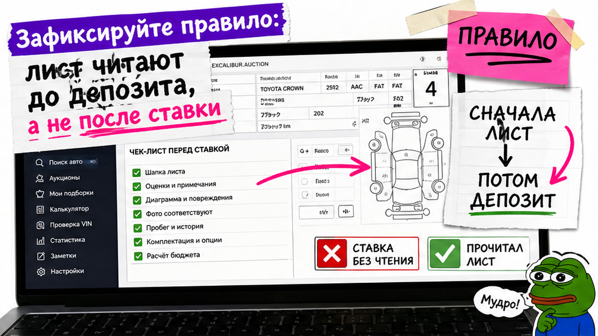
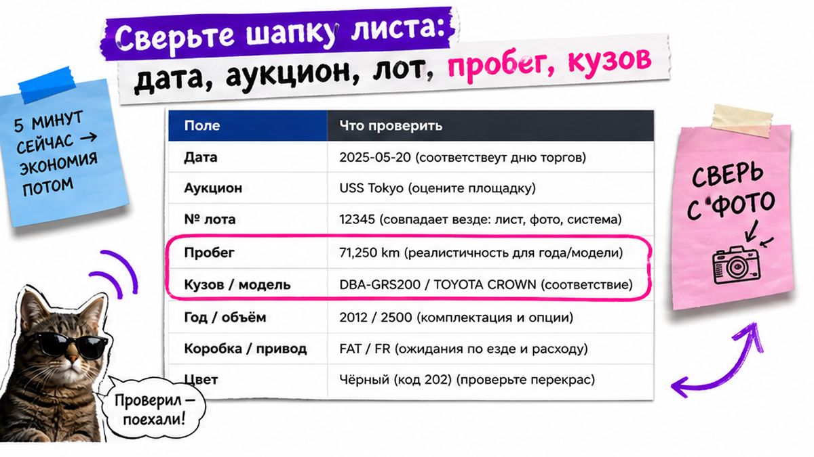
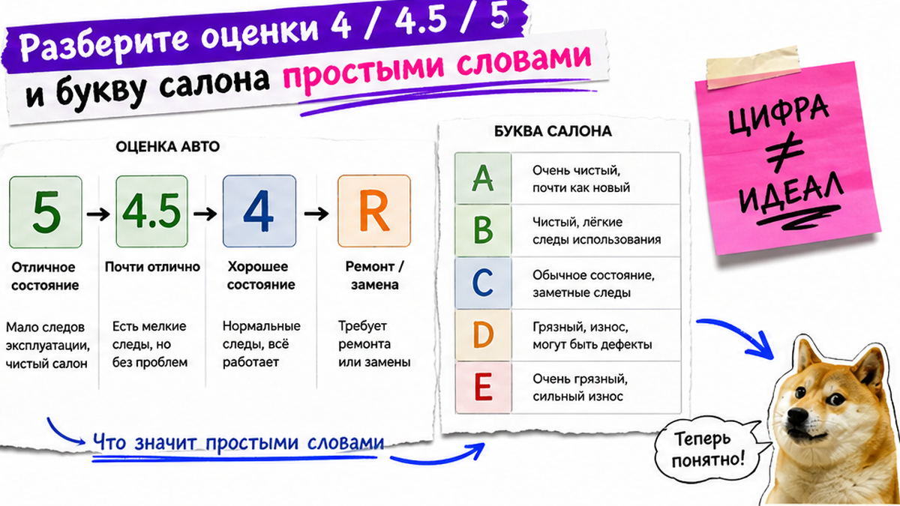

Впервые открываете японский аукционный лист – и вместо понятной диагностики видите шифр: 4, 4.5, R, A1, U2, W1. Страшно перевести депозит "на красивую оценку" и получить машину со скрытым ремонтом или коррозией. Ниже – порядок чтения до оплаты: шапка, оценка и салон, схема кузова, примечания, сверка с фото. После гайда вы сможете сказать "беру / не беру / нужно уточнение" и получите причину: выберите решение до депозита, не на эмоциях.
Коротко: Красивая общая оценка – фильтр, не гарантия. Читайте связку: цифра сверху + буква салона A–E + схема (W/X/XX/S/C) + перевод примечаний. Одна и та же "4.5" на TAA часто строже, чем на USS; по букве R/RA без схемы решать нельзя. Депозит – только после решения одним предложением.
Андрей из Хабаровска выбрал "четвёрку" с красивыми фото: сверху стояла 4, депозит ушёл быстро. Уже после выяснилось: на схеме W2 на крыле, в примечаниях – след ремонта. Типичная ошибка новичка: смотреть только на большую цифру. Аукционный лист – это карта состояния от инспектора площадки; личный осмотр покупателю из РФ на многих домах недоступен, поэтому глаза работают по бланку.

Депозит – уже деньги в чужой стороне сделки. Если после перевода всплывут W на силовых зонах, R или коррозия C/S, торг резко слабеет. Сначала фиксируете лот и проходите лист, потом решаете про оплату.
Порядок до депозита:
Оригинал листа → Шапка (площадка, лот, пробег) → Общая оценка + салон → История ремонта / R → Схема кузова → Примечания → Фото → Решение "беру / не беру / уточнение"
Сделайте: требуйте оригинал листа или полный скан. Не делайте: перевод "за бронь", пока не прочитаны схема и примечания.

Начните с правого верхнего угла и блока идентификации – так удобнее не потерять контекст. Выпишите на бумагу или в заметки пять полей.
На практике расхождение пробега лист/фото – уже стоп. Используйте шапку как шаг 1: сначала идентификация, потом оценки. Избегайте сравнения "4.5" с разных домов вслепую.
Сделайте: держите шапку рядом с решением по лоту. Не делайте: путать модель по красивому фото без сверки кузова.

Общая оценка – взгляд инспектора на состояние целиком. Типичная шкала: S, 6, 5, 4.5, 4, 3.5, 3 и ниже, плюс метки R / RA. На пальцах: 5 – очень чисто для пробега; 4.5 – самый массовый "хороший" лот; 4 – тоже рабочий вариант, но износ заметнее. Салон оценивают отдельно буквами A–E: это не то же самое, что цифра сверху.
| Что видите | Простыми словами | Что делать до депозита |
|---|---|---|
| 5 / 4.5 | Сильный или массово хороший лот | Всё равно читать схему и примечания |
| 4 | Нормальный вариант с более явным износом | Не отбраковывать зря, но искать W/X/C |
| R / RA | История ремонта силовых элементов | Стоп без перевода примечаний и схемы |
| Салон A–E | Отдельная оценка интерьера | Не смешивать с общей цифрой |
| Тире вместо оценки | На части гайдов трактуют как риск | Запросить пояснение у посредника |
Свежий нюанс 2026: одна и та же оценка "весит" по-разному. У TAA/CAA "4.5" часто считают строже, чем у USS; мелкие дома иногда ставят мягче. Источники ещё и расходятся, что именно значит RA – лёгкий ремонт или сценарий с подушками. Поэтому решать только по букве R/RA нельзя.
Сделайте: запишите оценку и салон двумя строками. Не делайте: покупать "потому что четвёрка" без остального листа.
Схема кузова – карта панелей с буквами. Мини-легенда для новичка:
A1 и U1 без паники, но в список. W2, X, XX, S, C и любые коды с силой 3 – красные флаги. Важно: XX на навесной панели (крыло, дверь на болтах) само по себе не равно "битой раме". История ремонта силовых элементов (修復歴) – отдельный сигнал; R/RA как раз про эту зону риска.
Блок примечаний инспектора часто важнее цифры: шумы, течи, запах, ремонт, коррозия. Японский текст не игнорируйте – выпишите непонятные строки и запросите перевод до оплаты. Например, в живых обсуждениях на форумах люди спорят: "четвёрка" + W2 на крыле – уже повод тормозить ставку. В реальном проекте заказа из Японии посредник, который отказывается перевести примечания до депозита, сам ставит красный флаг сделке.
Отдельно про R: на практике метка бывает очень разной – от аккуратного ремонта силового элемента до машины, которая "красива снаружи". Дешёвый R без схемы и перевода – лотерея, не скидка.
Сделайте: обведите все W/X/XX/S/C и коды с "3". Не делайте: отбраковывать лот только из-за XX на бампере или игнорировать R.
Лист без фото – половина картины. Фото без листа – лотерея. Сверьте крыло, бампер, цвет, комплектацию и пробег. Если на схеме отмечено крыло, а на фото "идеальный глянец" без пояснения – стоп. Если посредник прислал чужие кадры "похожей" машины – тоже стоп.
Учтите дом аукциона: USS часто воспринимают как более жёсткий бенчмарк; TAA по строгости "4.5" иногда ближе к USS "5". Не сравнивайте голые цифры с разных площадок в одной таблице желаний.
Если после сверки остались сомнения по панелям или пробегу – зафиксируйте список вопросов посреднику до оплаты. Форм на этой странице нет: расчёты и бронь живут вне блога.
Сделайте: держите лист и фото в одном экране. Не делайте: верить только "красивой галерее" без схемы.
Закройте лот только когда все пункты отмечены. Это ваш критерий результата: заполненный мини-чеклист и решение одним предложением до денег.
Сделайте: отправьте себе одно предложение-решение перед переводом. Не делайте: "оплачу сейчас, разберёмся на складе".
Возьмите один реальный лист и пройдите схему выше. Проверьте пункты чеклиста: шаг за шагом от шапки до фото. Критерий успеха – за 15–20 минут закрыть чеклист и сказать причину решения. Если лист R или полон W/X без перевода – список вопросов посреднику, не депозит. Добавьте в чат одно предложение-решение и уберите соблазн "оплачу сейчас". Честно говоря, этот короткий ритуал экономит больше нервов, чем любая "скидка на глаз".
Сделайте: сохраните заполненный чеклист и предложение-решение. Не делайте: откладывать чтение листа "на потом" после брони.
Нужен разбор под ключ – откройте каталог avto-sales125.ru до перевода депозита и уточните детали в Telegram @avtosales125. Мы во Владивостоке сопровождаем заказ из Японии от подбора до выдачи; на блоге форм нет.
Материал проверен: редакция Авто-Сейлс – эксперты по авто под заказ из Японии, Кореи и Китая (Владивосток).
Достоверность: легенда оценок и кодов сверена с открытыми гайдами tonari-japan, Provide Cars, JP Sheet (обзор салона/экстерьера, май 2026), Qualitex (май 2026) и практикой сопровождения заказов; цифры лотов и ставки в текст не выдумывали.
Запишите обе цифры как фильтр: 4.5 обычно "массово хороший" лот, 4 – с более заметным износом. Дальше всё равно откройте схему и примечания; без них разница цифр не защищает от ремонта.
Сверьте пробег листа с одометром на фото и с тем, что пишет посредник. При любом расхождении – стоп и запрос пояснения до депозита.
Не переводите депозит. Запросите перевод примечаний, разбор схемы и фото зон W/X/XX. Решение – только после понятной картины ремонта.
Выпишите код: A – царапина, U – вмятина, W – след ремонта; цифра – сила. A1/U1 обычно износ, W и коды с "3" – повод уточнять до оплаты.
Пройдите связку: оценка + салон + схема + примечания. Красивая "4" при W2 на крыле – классический сценарий потери денег после депозита.
Нет. Учитывайте площадку: TAA часто строже USS. Сравнивайте лоты с поправкой на дом или просите посредника объяснить шкалу конкретно по этому бланку.
Выделите непонятные строки примечаний и отправьте посреднику до оплаты. Не переводите депозит, пока стоп-фразы про ремонт, течи или коррозию не станут понятны по смыслу.